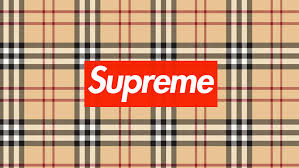
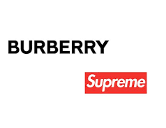
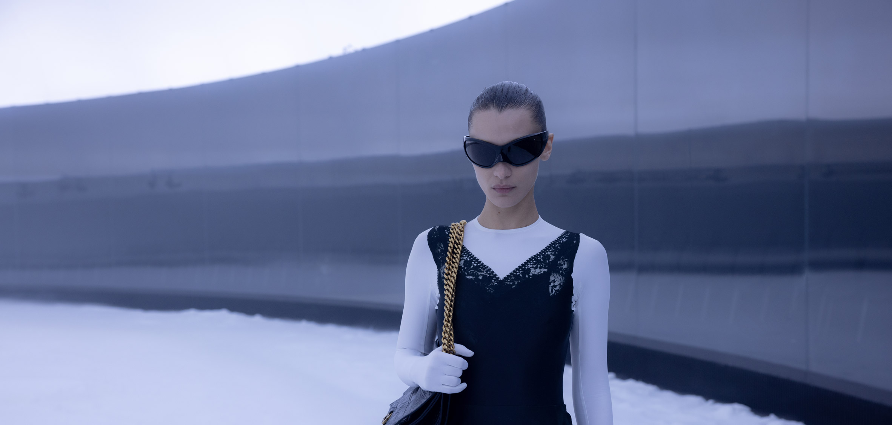

This article was published on January 25 and updated on March 9 Wasn't enough for Supreme to (allegedly) team up with BAPE for Spring/Summer 2022, eh? In January 2022, leakers began circulating rumors that Supreme was also planning a SS22 Burberry collaboration.
 Burberry replied to Highsnobiety's initial request for comment but demurred to speak on the record. The collection was eventually confirmed, however, by A$AP Nast in an Instagram post uploaded in early March.
Set in a glass rotunda as a simulation of a giant snow-globe, the production had been planned as one of Demna’s meta-immersive confrontations with climate change, projected into a time not very far ahead when snow will not exist, and become a wonder only ‘experienced’ through virtual reality. “I went to the mountains last Christmas, and there was no snow,” he said.